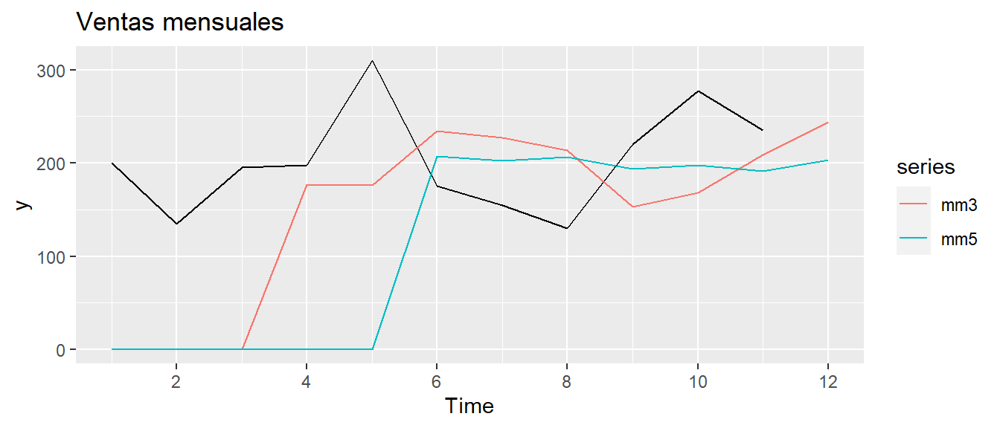
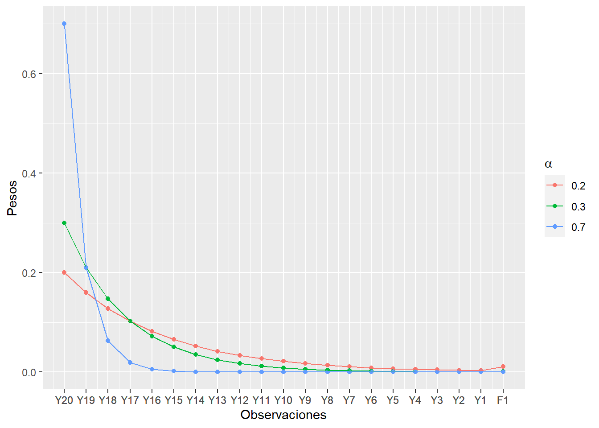
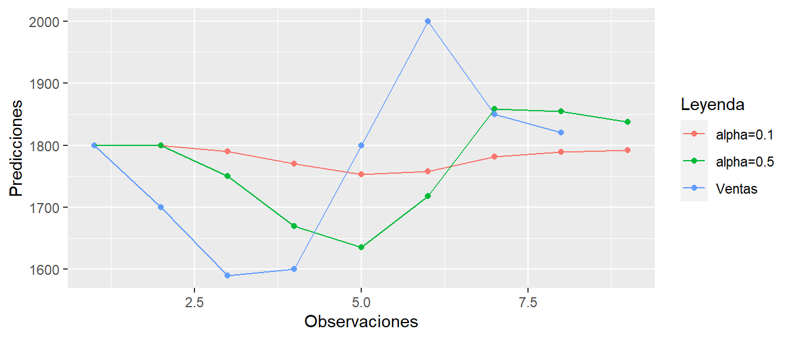

rm(list = ls())
suppressPackageStartupMessages(library("UComp"))
suppressPackageStartupMessages(library("ggplot2"))
library(UComp)
library(ggplot2)
mediamovil <- function(y, n=1){
# dimension de la serie temporal
dim<-length(y)
f<- rep(0,dim+1)
#Inicializo
f[n+1]<-mean(y[1:n])
#Calculo la media móvil recursiva
for (t in (n+1): dim){
f[t+1]<-f[t]+(y[t]-y[t-n])/n
}
return(f)
}
#Simulo una normal
data <- as.ts(rnorm(100))
#Calculo su media movil de orden 3
predMM<-as.ts(mediamovil(data,3))
#Lo dibujo
autoplot(predMM)+autolayer(data)3 Suavizado Exponencial
3.1 Suavizado exponencial simple. Componentes de nivel y error.
En primer lugar, se asume que el patrón subyacente en la demanda es constante (al menos para los próximos días o semanas) con algunas fluctuaciones aleatorias alrededor del promedio, es decir, se supone que la serie temporal está formada por la combinación de los componentes de nivel y error aleatorio (Ecuación 3.1). Por tanto, las técnicas de predicción que se verán en esta sección asumen el siguiente proceso generador de datos: \[ y(t)= N + e \tag{3.1}\]
3.1.1 Media móvil
Suaviza la demanda histórica promediando un número selecto de periodos pasados de datos y utiliza ese promedio como pronóstico para el siguiente periodo. El origen del modelo no es constante, sino que cada vez que se dispone de una nueva observación el origen del modelo se mueve con el fin de utilizar la historia más reciente para realizar las predicciones.
En la Figura Figura 3.1 se muestra cómo se utilizan las observaciones (\(Y_1, Y_2, \ldots, Y_t\)) hasta el origen (\(t\)) para realizar los pronósticos para tiempos posteriores (\(F_{t+1}, F_{t+2},\ldots,\)). De forma que, los pronósticos mediante la media móvil, se pueden calcular mediante la siguiente expresión: \[ F_{t+1}=\sum_{t-n+1}^t \frac{Y_i}{n} \tag{3.2}\] donde \(i\) es el número del periodo, \(t\) es el periodo actual (el periodo para el cual la demanda real más reciente es conocida) y \(n\) representa el número de periodos considerados en el promedio móvil. También se le conoce como orden de la media móvil. Otra expresión equivalente para calcular la predicción de la demanda para el periodo \(t+1\) mediante una media móvil de orden \(n\) es: \[ F_{t+1}=F_t+ \frac{Y_t-Y_{t-n}}{n} \tag{3.3}\] Si comparamos la expresión Ecuación 3.2 con Ecuación 3.3 se puede observar que la última ecuación sólo necesita almacenar la última predicción (\(F_t\)), la última observación (\(Y_t\)) y la observación determinada por el orden de la media móvil (\(Y_{t-n}\)). En cambio la primera ecuación tiene que almacenar todos los valores desde \(Y_{t-n+1}\) hasta \(Y_t\). Además, en Ecuación 3.3 el número de operaciones que tiene que realizar para proporcionar una predicción es menor, lo que implica que es una expresión más eficiente desde el punto de vista computacional.
Realiza una función en R que tenga como argumentos de entrada la serie temporal y el orden de la media móvil y, como argumento de salida, la predicción de la media móvil un paso hacia delante. Para comprobar que funciona correctamente, simula una normal aleatoria de tamaño 100 y un orden de media móvil de n=3. Dibuja la normal junto con las predicciones de la media móvil.
Al estar al final del periodo \(t\), se conoce la serie temporal en el periodo \(t\) y los pronósticos se hacen para \(t+1\), o \(t+X\) periodos en el futuro. No se hacen pronósticos para el periodo \(t\) ya que la serie temporal de éste es conocida (ver Figura 3.1 ). El método ingenuo (Naïve) es una media móvil para el caso particular de \(n=1\), el cual utiliza la última observación como predicción para el siguiente periodo. Este método ingenuo se utiliza como modelo de referencia cuando se propone una técnica de predicción, es decir, si alguien propone una técnica de predicción sofisticada para ciertos datos, estará justificada siempre y cuando mejore las predicciones proporcionadas por el método ingenuo.
Las ventas de un disolvente químico son las mostradas en la tercera columna de la Tabla 3.1, se pide calcular la predicción para el último mes mediante una media móvil de tercer orden y de quinto orden
| Mes | Periodo | Ventas |
|---|---|---|
| Enero | 1 | 200 |
| Febrero | 2 | 135 |
| Marzo | 3 | 195 |
| Abril | 4 | 197,5 |
| Mayo | 5 | 310 |
| Junio | 6 | 175 |
| Julio | 7 | 155 |
| Agosto | 8 | 130 |
| Septiembre | 9 | 220 |
| Octubre | 10 | 277,5 |
| Noviembre | 11 | 235 |
| Diciembre | 12 | ? |
Si aplicamos la ecuación Ecuación 3.2 para \(n=3\) y \(n=5\) podemos obtener las predicciones solicitadas para el mes de diciembre, ver Tabla 3.2 . La cuarta y quinta columna en la Tabla muestran las predicciones obtenidas para una media móvil de orden 3 y 5, respectivamente.
| Mes | Periodo | Ventas | Media Móvil (n=3) | Media Móvil (n=5) |
|---|---|---|---|---|
| Enero | 1 | 200 | ||
| Febrero | 2 | 135 | ||
| Marzo | 3 | 195 | ||
| Abril | 4 | 197,5 | 176,7 | |
| Mayo | 5 | 310 | 175,8 | |
| Junio | 6 | 175 | 234,2 | 207,5 |
| Julio | 7 | 155 | 227,5 | 202,5 |
| Agosto | 8 | 130 | 213,3 | 206,5 |
| Septiembre | 9 | 220 | 153,3 | 193,5 |
| Octubre | 10 | 277,5 | 168,3 | 198 |
| Noviembre | 11 | 235 | 209,2 | 191,5 |
| Diciembre | 12 | ? | 244,2 | 203,5 |
En construcción
# Borramos memoria
rm(list = ls())
suppressPackageStartupMessages(library("ggplot2"))
suppressPackageStartupMessages(library("UComp"))
# Cargamos librerías
library(UComp)
library(ggplot2)
# Recuperamos la función media móvil
mediamovil <- function(y, n=1){
# dimension de la serie temporal
dim<-length(y)
f<- rep(0,dim+1)
#Inicializo
f[n+1]<-mean(y[1:n])
#Calculo la media móvil recursiva
for (t in (n+1): dim){
f[t+1]<-f[t]+(y[t]-y[t-n])/n
}
return(f)
}
#Cargamos los datos
y<-(ts(c(200,135,195,197.5,310,175,155,130,220,277.5,235)))
mm3<-as.ts(mediamovil(y,3))
mm5<-as.ts(mediamovil(y,5))
autoplot(y)+ autolayer(mm3) + autolayer(mm5) +labs(title = "Ventas mensuales")
En el ejemplo anterior, se han realizado unas predicciones basadas en las medias móviles de diferente orden. No obstante, uno podría preguntarse, ¿cómo se define el orden de la media móvil? o lo que es lo mismo ¿qué valor de n elijo para realizar mis predicciones? Para determinar el valor de n, se tendrían que calcular los errores de predicción y seleccionar aquel valor de n que los minimice. Como todavía no se han definido los errores de predicción, dejaremos para más adelante en este capítulo como llevar a cabo dicha optimización. De momento, aunque no sepamos cómo elegir n de forma óptima si es recomendable que se entienda el efecto del parámetro de diseño n. Para ello pondremos el siguiente ejemplo. En la Figura 3.2 se ha representado una serie temporal y(t) la cuál queremos predecir. Con ese fin, se han calculado medias móviles con los siguientes valores de n, n=10, 50. ¿Podrías explicar cuál ha sido el efecto de aumentar el valor de n? En principio hay dos efectos muy claros. El primero es que cuanto mayor es el valor de n, más observaciones se requieren para poder empezar a realizar predicciones. El segundo efecto, es que cuanto mayor es el valor de n mayor es el suavizado de nuestras predicciones. Estas mismas conclusiones se pueden observar en el primer ejemplo en la Figura 3.2. De acuerdo a estas conclusiones iniciales uno podría pensar que la mejor decisión será elegir un orden lo mayor posible para conseguir un mayor grado de suavizado. No obstante esta decisión también tiene sus inconvenientes. Si repetimos el mismo experimento anterior, pero en este caso sobre la serie temporal mostrada en la Figura 3.3, se puede observar que la media móvil de orden (\(n=50\)) es incapaz de adaptarse al salto brusco que ha ocurrido en los datos, mientras que la media móvil de menor orden (\(n=10\)) se adapta mucho más rápido. Por tanto, cuanto mayor sea el orden de la media móvil, mayor será su suavizado pero menor será su capacidad de adaptación a cambios bruscos en la serie temporal.
3.1.2 Suavizado exponencial
El algoritmo de suavizado exponencial fue inicialmente propuesto por Robert Brown sobre 1944, cuando estuvo trabajando como analista de investigación de operaciones en la marina de los EEUU, donde implementó esta idea en un aparato mecánico con el fin de rastrear la velocidad y ángulo utilizados para derribar submarinos. Otra de sus primeras aplicaciones fue pronosticar la necesidad de piezas de repuesto en el sistema de inventarios de la marina de los EEUU. Posteriormente, sobre 1950 extendió sus resultados para incluir componentes de tendencia y estacionalidad. Es interesante señalar que, independientemente, Charles Holt que trabajaba en la oficina de investigación naval desarrolló también un suavizado exponencial incluyendo las componentes de tendencia y estacionalidad.
Al igual que la media móvil, el suavizado exponencial se utiliza cuando las componentes principales en la serie temporal son el nivel y el error aleatorio. Si analizamos el ejemplo 1 de la sección anterior, se puede comprobar que la media móvil suaviza los datos históricos ponderando con un mismo peso cada observación del histórico de datos. De forma que si volvemos a calcular la media móvil de orden 3 del ejemplo anterior, teníamos que: \[ \begin{equation} F_{12}=\frac{220 + 277.5 + 235}{3}=244.2 \end{equation} \] donde el peso de cada observación sería \(1/3\). No obstante, uno podría pensar que tendría más sentido que lo que ha pasado ayer afecte más a lo que pase mañana, que lo que ocurrió hace 2 semanas, o dicho en otras palabras, que los pesos más cercanos al presente sean mayores que los pesos más alejados del presente.
En este apartado se describe el suavizado exponencial que, siguiendo esa lógica, coloca los pesos en las observaciones de manera que decrecen exponencialmente según las observaciones se alejan del presente. El pronóstico por suavizado exponencial se calcula como: \[ \begin{eqnarray} F_{t+1}&=&F_t + \alpha(Y_t - F_t) \\ F_{t+1}&=&\alpha(Y_t) + (1-\alpha)F_t \end{eqnarray} \tag{3.4}\] donde \(\alpha\) es una constante positiva entre 0 y 1. Se puede observar que la nueva predicción es simplemente la predicción anterior más un ajuste de los errores de predicción que ocurrieron en el periodo anterior. Cuando \(\alpha\) tiene un valor cercano a 1, el nuevo pronóstico incluirá un ajuste sustancial debido al error en el pronóstico anterior. Sin embargo, si tiene una valor cercano a 0, el nuevo pronóstico no se ajustará mucho. Las implicaciones del suavizado exponencial se pueden ver mejor si expandimos la ecuación anterior: \[ \begin{eqnarray} F_{t+1}&=&\alpha Y_t + \alpha (1-\alpha)Y_{t-1} + \alpha(1-\alpha)^2Y_{t-2}+ \alpha(1-\alpha)^3Y_{t-3} \nonumber \\ &&+\alpha(1-\alpha)^4Y_{t-4}+\ldots+(1-\alpha)^{t}F_1 \end{eqnarray} \tag{3.5}\] La Ecuación 3.5 muestra como se distribuyen los pesos en las observaciones pasadas, de modo que si \(\alpha\) es menor que 1, dicho peso decrece exponencialmente. Es interesante señalar el último término de dicha expresión \((1-\alpha)^{t}F_1\), donde \(F_1\) es la predicción inicial, la cuál desconocemos y tenemos que estimar. La estimación de dicho valor se le conoce como inicialización del algoritmo.
Supongamos que \(\alpha=0,3\) y \(t=3\), ¿Cuál es el peso que tendrá la predicción inicial \(F_1\)?
\[ F_4=0.3Y_3+0.21Y_2+0.147Y_1+0.343F_1 \] Se puede observar que el peso de la predicción inicial \(F_1\) es igual a 0.343 que es incluso superior al peso de la observación más reciente \(Y_3\) que es 0.3. Por tanto, hay que ser conscientes que si disponemos de pocas observaciones el peso de la predicción inicial es muy significativo y, por tanto, es crucial estimar adecuadamente \(F_1\).
Para el mismo valor de \(\alpha\) del ejercicio anterior, ¿cuál sería el peso de \(F_1\) si t=20? Para resolverlo, programa una función que calcule los pesos en función del valor de \(\alpha\) y \(t\). Dibuja la evolución de dichos pesos frente al tiempo.
# Borramos memoria
rm(list = ls())
suppressPackageStartupMessages(library("ggplot2"))
suppressPackageStartupMessages(library("UComp"))
# Cargamos librerías
library(UComp)
library(ggplot2)
# Recuperamos la función media móvil
sespesos <- function(t=10, a=0.1){
peso<-rep(0,t+1)
for (i in 1:(t) ) {
#Calculo la media móvil recursiva
peso[i]<-a*(1-a)^(i-1)
}
#Le añado el peso de la condición inicial
peso[t+1]<-(1-a)^t
return(peso)
}
pesos<-sespesos(20,0.3)
d1<-data.frame(tiempo=c(1:21),pesos)
ggplot(data = d1,mapping = aes(x = tiempo, y=pesos)) +
geom_line() +
geom_point() +
scale_x_continuous(breaks=c(1:21),labels=c(paste("Y",20:1,sep=""), paste("F",1,sep="")))En este caso, el peso sería aproximadamente cero, es decir, cuando disponemos de más observaciones las predicciones iniciales tienen muy poco peso.
Para el mismo valor de \(t=20\) del ejercicio anterior, ¿qué ocurriría para diferentes valores de \(\alpha=0.2, 0.3, 0.7\)? Dibuja la evolución de dichos pesos frente al tiempo.
# Borramos memoria
rm(list = ls())
suppressPackageStartupMessages(library("ggplot2"))
suppressPackageStartupMessages(library("UComp"))
suppressPackageStartupMessages(library("latex2exp"))
# Cargamos librerías
library(UComp)
library(ggplot2)
library(latex2exp)
# Recuperamos la función media móvil
sespesos <- function(t=10, a=0.1){
peso<-rep(0,t+1)
for (i in 1:(t) ) {
#Calculo la media móvil recursiva
peso[i]<-a*(1-a)^(i-1)
}
#Le añado el peso de la condición inicial
peso[t+1]<-(1-a)^t
return(peso)
}
pesos1<-sespesos(20,0.2)
pesos2<-sespesos(20,0.3)
pesos3<-sespesos(20,0.7)
d1<-data.frame(tiempo=rep(c(1:21),3),pesos=c(pesos1,pesos2,pesos3),alpha=c(rep(0.2,21),rep(0.3,21),rep(0.7,21)))ggplot(data = d1,aes(x = tiempo, y=pesos, group=alpha, color=as.factor(alpha))) +
geom_point() +
geom_line() +
scale_x_continuous(breaks=rep(c(1:21),3),labels=rep(c(paste("Y",20:1,sep=""), paste("F",1,sep="")),3)) +
labs(x="Observaciones", y="Pesos", color=TeX("$\\alpha$"))
La Figura 3.4 muestra la influencia del parámetro \(\alpha\) sobre el peso de las observaciones. En dicha figura se puede observar que cuanto más cercano a 1 se encuentra el parámetro \(\alpha\), más peso se le dan a las observaciones más recientes y viceversa.
Una bodega en la Mancha ha exportado grandes cantidades de vino de calidad suprema durante los ocho últimos trimestres que se muestran en la segunda columna de la Tabla 3.3. El director de operaciones quiere analizar la utilización de la técnica de suavizado exponencial en la previsión de las cajas de botellas exportadas. Para ello, supone que la previsión de vino exportado en el primer trimestre fue de 1.750 cajas. Se plantea utilizar los siguientes valores \(\alpha=0,1\) y \(0,5\). ¿Cuál será la previsión para el trimestre 9?
| Trimestre | Ventas |
|---|---|
| 1 | 1.800 |
| 2 | 1.700 |
| 3 | 1.590 |
| 4 | 1.600 |
| 5 | 1.800 |
| 6 | 2.000 |
| 7 | 1.850 |
| 8 | 1.820 |
| 9 | ? |
# Borramos memoria
rm(list = ls())
suppressPackageStartupMessages(library("ggplot2"))
suppressPackageStartupMessages(library("UComp"))
# Cargamos librerías
library(UComp)
library(ggplot2)
#Programo una función que calcule el suavizado exponencial simple
ses <- function(y, a=0.03){
t<-length(y)
f<-rep(0,t+1)
#Inicializo
f[1]<-y[1]
# Recorremos el vector y
for (i in 1:(t) ) {
#Calculo la media móvil recursiva
f[i+1]<-f[i]+a*(y[i]-f[i])
}
return(f)
}
ventas<-c(1800,1700,1590,1600,1800,2000,1850,1820)
pred1<-ses(ventas,0.1)
pred2<-ses(ventas,0.5)
#Dibujamos los resultados
dv<-data.frame(tiempo=c(1:length(ventas)),ventas)
d1<-data.frame(tiempo=c(rep(c(1:9),2),1:8),pred=c(pred1,pred2,ventas),alpha=c(rep("alpha=0.1",9),rep("alpha=0.5",9),rep('Ventas',8)))
ggplot() +
geom_point(data = d1,aes(x = tiempo, y=pred, group=alpha, color=as.factor(alpha))) +
geom_line(data = d1,aes(x = tiempo, y=pred, group=alpha, color=as.factor(alpha))) +
labs(x="Observaciones", y="Predicciones", color="Leyenda")
En la figura se muestran las cajas descargadas junto con las previsiones utilizando un suavizado exponencial simple para los dos valores de \(\alpha\) considerados. Se puede observar que un valor del \(\alpha\) más cercano a 0 proporciona un mayor suavizado en las predicciones.
Hasta ahora hemos supuesto que el valor de la predicción inicial \(F_1\) era un dato conocido. No obstante, en la realidad dicha predicción inicial no es conocida sino que hay que estimarla. Una solución heurística común es usar la primera observación como pronóstico inicial (\(F_1=Y_1\)). Otra posibilidad más robusta es promediar los tres, cuatro primeros valores y usar ese promedio como pronóstico inicial, tal que:
\[ F_1=\frac{Y_1+Y_2+Y_3}{3} \]
3.2 Evaluación de las predicciones
En la Figura 3.5 (1) se muestra una pintura de Caravaggio localizada en el museo del Louvre de París: La buenaventura, 1595. El cuadro muestra a un joven vestido con ropas elegantes al que una chica pobre lee la palma de la mano. El chico parece encantado al mirarle a la cara (no se da cuenta de que ella está quitándole poco a poco el anillo) a esta mirada masculina ella responde con su propia mirada astuta y silenciosa. La atención del espectador se centra precisamente en esas miradas que permiten adivinar lo que cada uno de los personajes piensan, en lugar de lo que ocurre en las dos manos de los personajes.
Este cuadro se menciona en el libro del cisne negro de Nassim Taleb para mostrarnos cuán ingenuos podemos llegar a ser frente a aquellos que nos cuentan el futuro. Para no ser tomados como ingenuos, necesitaremos ser críticos con las predicciones a las que nos tengamos que enfrentar. Para ello una herramienta muy útil es conocer el error de predicción. De forma que cuando alguien nos presente una estimación para no ser tomados por ingenuos también deberíamos exigir cuál es el error de dicha estimación. Por ejemplo, no es lo mismo decir nuestra previsión de ventas para el mes siguiente es de 1000 unidades más/menos 10 que tener una previsión de 1000 unidades más/menos 500.
Otro cuadro que muestra el interés de conocer el futuro se muestra en Figura 3.5 (2). Dicho cuadro de Julio Romero (1920) se muestra en el museo Thyssen de Málaga (https://www.carmenthyssenmalaga.org/obra/la-buenaventura)
En resumen, el ejercicio de previsión no finaliza una vez realizadas las predicciones sino que tenemos que comprobar que dichas previsiones son adecuadas. Para ello es importante estimar los errores de predicción. Además, el análisis de los errores nos permite:
- Detectar indicadores de demandas erráticas que deben evaluarse con cuidado y quizás eliminar de los datos.
- Estimar los parámetros de los algoritmos mediante la minimización de los errores de predicción.
- Determinar cuando el método de pronóstico no representa ya la demanda actual y es necesario volver a proponer diferentes modelos.
3.2.1 Medidas de error de predicción
Independientemente de si se utilizan métodos o modelos formales para realizar la predicción de cualquier variable, algo que nos va a interesar siempre es comprobar la calidad de las predicciones, su nivel de precisión e incluso comparar la precisión de distintos métodos para las mismas series, con el fin de elegir el mejor.
Denotamos por \(\hat{y}_{T+l|T}\) a la predicción de la variable \(y_t\), \(l\) periodos hacia adelante con origen de predicción \(T\). El error de predicción \(l\) periodos hacia adelante con origen \(T\) se define como la diferencia entre la predicción y el valor real, tal que:
\[\hat{e}_{T+l|T}=\hat{y}_{T+l|T}-y_{T+l}\]
A la hora de definir las métricas hay que distinguir dos conceptos: a) el sesgo del error; y b) la precisión del error.
El sesgo nos indica el error sistemático de las predicciones, es decir, si las predicciones son superiores o inferiores a los valores reales. Evidentemente, para predicciones individuales el error nunca será exactamente cero, pero lo ideal es que los errores positivos se compensen con errores negativos. Por tanto, las medidas de sesgo tienen asociado un signo positivo o negativo. La métrica más conocida es el ME (ver Tabla 3.4)
| Métrica | Fórmula | |
|---|---|---|
| Sin escala | Mean Error | \(ME=\frac{1}{n}\sum_{l=1}^{n}\hat{e}_{T+l|T}\) |
| Porcentual | Mean Percentage Error | \(MPE=\frac{100}{n}\sum_{l=1}^{n}\frac{\hat{e}_{T+l|t}}{y_t}\) |
Las métricas de sesgo nos indican el signo del error pero no el tamaño del mismo, el cuál se define como la precisión del error. Dicho de otra forma, si utilizamos el ME, los errores positivos se compensan con los negativos y no nos da una indicación de cómo de grandes son los errores. Para completar las métricas de sesgo hay que incluir otra métricas que nos indiquen la precisión del error, es decir, su tamaño. Estas métricas transformarán los errores para evitar el signo de forma que los errores siempre sumen. Las formas más comunes para evitar el signo de los errores es usar valores absolutos o elevar los errores al cuadrado. De esta forma, se obtiene el Mean Absolute Error (MAE), el Mean Squared Error (MSE) y el Root Mean Squared Error (RMSE=\(\sqrt{MSE}\)). En la Tabla 3.5 se muestra un resumen de las métricas de precisión. Hay que señalar que tanto el MAE como el RMSE tienen las mismas unidades que la variable de estudio \(y_t\) lo que facilita su interpretación.
Las métricas definidas hasta ahora son útiles cuando se está analizando una serie temporal. En caso de que se necesite calcular el error de predicción sobre un conjunto de series temporales se suelen utilizar otras métricas que eliminen las unidades de cada serie temporal y así se puedan agregar los resultados. Entre estas métricas, nos encontramos los errores porcentuales, los errores escalados y los errores relativos.
El error porcentual (PE) se calcula como:
\[PE=\frac{\hat{e}_{T+l|T}}{y_{T+l}}\cdot 100\] Por tanto, una médida de sesgo porcentual sería el Mean Percentage Error (MPE), ver Tabla 3.4 y una medida de tamaño sería el Mean Absolute Percentage Error (MAPE), ver Tabla 3.5. A pesar de que la métrica MAPE es muy intuitiva, su uso cada vez es menor dado la asimetría que presenta, es decir, penaliza de forma diferente, de ahí su asimetría, los errores positivos y negativos. Para corregir dicha asimetría se ha propuesto el Symmetric MAPE (sMAPE), donde los denominadores son la media de valores absolutos de valores reales y predicciones.
Un problema que presentan las métricas porcentuales es su utilización cuando la serie temporal presenta ceros entre sus valores. Por ejemplo, las ventas de una pieza de repuesto donde en algunos periodos temporales las ventas son cero. Para solucionar la problemática de las métricas porcentuales, se han propuesto los errores escalados como el Mean Absolute Scaled Error (MASE), donde el denominador que normaliza los errores está compuesto por el error absoluto medio de las predicciones Naïve un paso hacia delante. De esta forma se compara la precisión de las predicciones fuera de la muestra con la precisión de un modelo sencillo dentro de la muestra. La versión cuadrática del MASE es el Root Mean Squared Scaled Error (RMSSE)
En la Tabla 3.4 y Tabla 3.5 se promedian siempre funciones del error de predicción con un horizonte de \(n\) periodos hacia adelante desde el origen de predicción, que será por lo general el final de la muestra, la observación \(T\)-ésima.
| Métrica | Fórmula | |
|---|---|---|
| Sin escala | Mean Absolute Error | \(MAE=\frac{1}{n}\sum_{l=1}^{n}|\hat{e}_{T+l|T}|\) |
| Root Mean Squared Error | \(RMSE=\sqrt{\frac{1}{n}\sum_{l=1}^{n}\hat{e}^2_{T+l|T}}\) | |
| Porcentual | Mean Absolute Percentage Error | \(MAPE=\frac{100}{n}\sum_{l=1}^{n}|\frac{\hat{e}_{T+l|T}}{y_t}|\) |
| Symmetric MAPE | \(sMAPE=\frac{100}{n}\sum_{l=1}^{n}|\frac{\hat{e}_{T+l|T}}{(|\hat{y}_{T+l|T}|+|y_t|)/2}|\) | |
| Root Mean Squared Percentage Error | \(RMSPE=\sqrt{\frac{100}{n}\sum_{l=1}^{n}\frac{\hat{e}^2_{T+l|T}}{y_t^2}}\) | |
| Escalada | Mean Absolute Scaled Error | \(MASE=\sqrt{\frac{\frac{1}{n}\sum_{l=1}^{n}|\hat{e}_{T+l|T}|}{\frac{1}{T-1}\sum_{t=1}^T |y_t-y_{t-1}|}}\) |
| Root Mean Squared Scaled Error | \(RMSSE=\sqrt{\frac{\frac{1}{n}\sum_{l=1}^{n}\hat{e}^2_{T+l|T}}{\frac{1}{T-1}\sum_{t=1}^T (y_t-y_{t-1})^2}}\) | |
| Relativos | Relative MAE | \(RelMAE=\frac{MAE}{MAE_b}\) |
Borra toda la memoria y carga las librerías que necesites (rm, UComp, ggplot2). Representa la serie pasajeros de avión en la variable airpas frente al tiempo con autoplot. La escala es muy grande, divide por 100.
Tomando los datos desde enero de 1995 hasta febrero de 2020, estima las predicciones a partir de marzo con los métodos sencillos (el naive, naive estacional y media anual) hasta el final de la muestra. Muestra las predicciones y los valores reales (autoplot + autolayer).
¿Qué modelo es el que tiene mayor precisión fuera de la muestra (Accuracy)? Estima los pasajeros que se han perdido por la pandemia (colSums).
rm(list = ls())
library(UComp)
library(ggplot2)
y = airpas / 100
autoplot(y) + labs(title = "Pasajeros")Tomando los datos desde enero de 1995 hasta febrero de 2020, estima las predicciones a partir de marzo con los métodos sencillos (el naive, naive estacional y media anual) hasta el final de la muestra. Muestra las predicciones y los valores reales (autoplot + autolayer).
# Horizonte de predicción
h = 31
# Seleccionamos datos entre 1995 y 2020
x = window(y, start=1995, end = 2020 + 1 / 12)
# Predicción de modelos convirtiéndolos a objetos series temporales
naive = ts(rep(tail(x, 1), h), start = 2020 + 2 / 12, frequency = 12)
snaive = ts(head(rep(tail(x, 12), 3), h), start = 2020 + 2 / 12, frequency = 12)
mediaAnual = ts(rep(mean(tail(x, 12)), h), start = 2020 + 2 / 12, frequency = 12)
# Representando serie y predicciones
autoplot(tail(y, 80)) +
autolayer(naive) +
autolayer(snaive) +
autolayer(mediaAnual)
¿Qué modelo es el que tiene mayor precisión fuera de la muestra (Accuracy)? Estima los pasajeros que se han perdido por la pandemia (colSums).
# Calculando métricas de error
Accuracy(cbind(naive, snaive, mediaAnual), y)
## ME RMSE MAE MPE PRMSE MAPE sMAPE
## naive 53.6947 95.61781 82.93178 857.6759 2911.154 870.0941 75.65195
## snaive 118.6199 139.26591 118.61992 1233.4289 4085.732 1233.4289 85.71962
## mediaAnual 112.5124 137.54520 119.63512 1206.6896 3982.979 1209.5075 87.11351
## MASE RelMAE Theil's U
## naive 14.03755 0.7228638 2.340946
## snaive 20.07834 1.0339347 3.285460
## mediaAnual 20.25018 1.0427836 3.202833
# Calculando viajeros perdidos
colSums(cbind(naive, snaive, mediaAnual) - rep(tail(y, h), 3))
## naive snaive mediaAnual
## 1664.536 3677.217 3487.884Todos los modelos están sesgados al alza (no son capaces de predecir el efecto de la pandemia) si se mira el ME y MPE. El modelo más preciso es naive, seguido de naive estacional y la media anual.
Los pasajeros perdidos de los modelos, serían 166, 367 y 348 millones en los 31 meses evaluados según el naive, snaive y mediAnual, respectivamente.
Nota
En general no hay una medida de error que pueda darnos toda la información acerca de la precisión de las predicciones, y por tanto, se recomienda el uso de varias métricas cuando se realicen predicciones. Concretamente, se recomienda, al menos, utilizar una métrica de sesgo y otra métrica de precisión.
3.2.2 Intervalos de predicción
Como hemos discutido anteriormente, el suavizado exponencial simple es un método de predicción y, por tanto, sólo proporciona una predicción puntual. No obstante, la predicción puntual no nos indica nada acerca de su precisión. De hecho, en muchas ocasiones las predicciones puntuales se ofrecen con numerosos decimales lo que da una idea errónea de la precisión de la predicción. Para conocer la precisión de una predicción, se suele utilizar los intervalos de predicción, los cuales consisten en un límite superior e inferior entre los cuales se espera que el valor futuro se encuentre con una probabilididad determinada. Aunque hay diferentes formas de calcular los intervalos de predicción, dado que hasta el momento estamos trabajando con métodos de predicción, se utilizarán los errores de predicción para calcular el intervalo de predicción de una forma empírica. Más adelante, cuando se describan los modelos de predicción se podrá calcular los intervalos de predicción de una forma teórica.
En general, un intervalo de predicción proporciona un rango dentro del cuál esperamos que se encuentre el valor real \(y_t\) con una probabilidad determinada. Por ejemplo, si suponemos que la distribución de las observaciones futuras sigue una normal, un intervalo de predicción para la predicción un paso hacia adelante con una confianza del \(100(1-\alpha)\%\) sería:
\[ [U_{t+1}, L_{t+1}]=[F_{t+1} \pm z_{\alpha/2} \cdot \hat{\sigma}_{t+1}] \]
donde \(U_{t+1}\) es el límite superior del intervalo de predicción, \(L_{t+1}\) es el límite inferior del intervalo de predicción, \(\hat{\sigma}_{t+1}\) es una estimación de la desviación típica de la distribución de las predicciones un paso hacia adelante, y \(F_{t+1}\) que es la predicción puntual un paso hacia adelante proporcionada, por ejemplo, con el suavizado exponencial simple. El valor \(z_{\alpha/2}\) se obtiene de la distribución normal estandard. Por ejemplo, si el nivel de confianza es del 95%, entonces \(z_{\alpha/2}=1,96\).
Se puede observar como el intervalo de predicción completa la información proporcionada por la predicción puntual. Concretamente, nos da una indicación de la incertidumbre asociada a la prediccion puntual, o dicho de otra forma, si el intervalo de predicción es muy amplio, la incertidumbre de la predicción puntual será grande y viceversa.
Normalmente, la mayor dificultad a la hora de calcular el intervalo de predicción se refiere al cálculo de \(\hat{\sigma}_{t+1}\). Una aproximación que se suéle utilizar es estimar \(\hat{\sigma}_{t+1}\) con la métrica \(RMSE\) obtenida del análisis de los errores de predicción, tal que \(\hat{\sigma}_{t+1}=RMSE\).
3.3 Suavizado exponencial doble (Método de Holt). Componentes de nivel, tendencia y error.
Anteriormente, analizamos dos técnicas (media móvil y suavizado exponencial simple) que nos daban la predicción en caso que el patrón de los datos fuera un nivel constante con fluctuaciones aleatorias. En el caso de que los datos exhiban una tendencia positiva o negativa, el suavizado exponencial o la media móvil no proporcionarían buenas predicciones, y por tanto, el suavizado exponencial debe ser modificado para incluir tendencias en el modelo.
En esta sección, se analizará la versión del suavizado exponencial que incluye la componente de tendencia, dicho de otra forma, se está asumiendo que el modelo generador de datos es:
\[ y(t)= N + T + e \]
donde se ha incluido la componente de tendencia (\(T\)) en forma aditiva. Si incluimos la componente de tendencia se obtiene la siguiente expresión también conocida como el doble suavizado exponencial o método de Holt:
\[ \begin{eqnarray} L_t&=&\alpha(Y_t) + (1-\alpha)[L_{t-1} + b_{t-1}] \\ b_t&=&\beta(L_t - L_{t-1}) + (1-\beta)b_{t-1} \\ F_{t+1} &=& L_t + b_t \end{eqnarray} \]
donde \(L_t\) es la componente de nivel y \(b_t\) la componente de tendencia, la cual se actualiza con la diferencia de \(L_t - L_{t-1}\). La nueva componente de tendencia, también incluye una nueva constante de suavizado \(\beta\) que es un parámetro de diseño como \(\alpha\).
Un determinado productor está utilizando la técnica de doble suavizado exponencial para predecir la demanda de una pieza del equipamiento de control de contaminación, ver datos en las dos primeras columnas de la Tabla 3.6. Parece que los datos contienen cierta tendencia. Las constantes de suavizado que ha definido la empresa son \(\alpha=0.2\) y \(\beta=0.4\). Se supone que el nivel inicial (\(L_1\)) fue 11 unidades y la tendencia en dicho periodo (\(b_1\)) fue 2. Calcule las predicciones para dicha pieza mediante el método de Holt.
| Mes | Demanda |
|---|---|
| 1 | 12 |
| 2 | 17 |
| 3 | 20 |
| 4 | 19 |
| 5 | 24 |
| 6 | 21 |
| 7 | 31 |
| 8 | 28 |
| 9 | 36 |
| Mes | Demanda | Nivel (\(L_t\)) | Tendencia (\(b_t\)) | Holt | SES |
|---|---|---|---|---|---|
| 1 | 12 | 11 | 2 | 12 | |
| 2 | 17 | 13.8 | 2.3 | 13.0 | 12.0 |
| 3 | 20 | 16.9 | 2.6 | 16.1 | 13.0 |
| 4 | 19 | 19.4 | 2.6 | 19.5 | 14.4 |
| 5 | 24 | 22.4 | 2.7 | 22.0 | 15.3 |
| 6 | 21 | 24.3 | 2.4 | 25.2 | 17.1 |
| 7 | 31 | 27.6 | 2.8 | 26.7 | 17.8 |
| 8 | 28 | 29.9 | 2.6 | 30.3 | 20.5 |
| 9 | 36 | 33.2 | 2.9 | 32.4 | 22.0 |
En la tercera y cuarta columna de esa misma tabla se muestran las estimaciones de las componentes de la serie temporal \(L_t\) y \(b_t\) junto con las predicciones obtenidas mediante el método de Holt (quinta columna) y el suavizado exponencial simple (sexta columna), donde para este último se utilizó un \(\alpha=0.2\). En la Figura 3.6 se han dibujado la demanda junto con las predicciones. Se puede observar como las predicciones mediante el método de Holt capturan la tendencia incluida en la serie temporal, mientras que el suavizado exponencial simple (SES) no proporciona una buena predicción de la serie temporal.
Como hicimos con el suavizado exponencial simple podríamos programar una función que implementara las ecuaciones del método de Holt. Sin embargo, todas esas ecuaciones se han implementado en el paquete UComp. Concretamente, en la función ETS que se detallará más adelante. Por el momento, lo que necesitamos definir es ¿cuáles son las componentes de la serie temporal? De hecho, ETS hace referencia al Error, Tendencia y eStacionalidad. Hasta ahora sólo consideraremos ruidos aditivos. Según el gráfico de las ventas, la tendencia es aditiva y tampoco hay indicios de estacionalidad. Por tanto el modelo ETS equivalente al método de Holt será ETS=“AAN”. De la misma forma, el modelo ETS equivalente al suavizado exponencial simple será ETS=“ANN”. Hay que señalar que la optimización de los parámetros y la inicialización la realiza automáticamente la función ETS.
rm(list = ls())
library(UComp)
library(ggplot2)
# Ventas
yts<-ts(c(12,17,20,19,24,21,31,28,36),start=1,end=9)
# Selecionando muestra
x = window(yts, start=1, end = 8)
# Horizonte de predicción
h = 1
# Estimando y prediciendo con Doble Suavizado Exponencial
mholt = ETS(x, model="AAN", h = h)
predholt<-mholt$yFor
print(predholt)
## Time Series:
## Start = 9
## End = 9
## Frequency = 1
## Series 1
## [1,] 31.67857
# Estimando y prediciendo con Suavizado Exponencial Simple
mses = ETS(x, model="ANN", h=h)
predSES<-mses$yFor
print(predSES)
## Time Series:
## Start = 9
## End = 9
## Frequency = 1
## Series 1
## [1,] 28.14612
# Podemos dibujar el ajuste
autoplot(yts)+autolayer(mholt$comp[,2])Al igual que ocurrió con el suavizado exponencial simple, tenemos que decidir como inicializar el algoritmo, o lo que es lo mismo, estimar los valores iniciales de nivel (\(L_1\)) y pendiente (\(b_1\)). Una posibilidad es la siguiente:
\[ L_1=\frac{(Y_1+Y_2+\ldots+Y_n)}{s} \]
\[ b_1=\frac{1}{n-1}\left[\frac{(Y_{2}-Y_1)}{1}+\frac{(Y_{3}-Y_2)}{1}+\ldots+\frac{(Y_{n}-Y_{n-1})}{1}\right] \]
donde \(n\) es el número de observaciones utilizadas para la inicialización. Por ejemplo, con las tres o cuatro primeras observaciones puede ser suficiente.
3.4 Triple suavizado exponencial (Holt-Winters). Componentes de nivel, tendencia y estacionalidad
Los métodos anteriores funcionan bien cuando no existe estacionalidad en los datos. En el caso de que también exista estacionalidad y sea multiplicativa, nuestro modelo sería:
\[ \begin{eqnarray} L_t&=&\alpha(\frac{Y_t}{S_{t-s}}) + (1-\alpha)[L_{t-1} + b_{t-1}] \label{nivelHW} \\ b_t&=&\beta(L_t - L_{t-1}) + (1-\beta)b_{t-1} \label{trendBH}\\ S_t&=&\gamma\frac{Y_t}{L_t} + (1-\gamma)S_{t-s} \\ F_{t+1} &=& (L_t + b_t )S_{t-s+1} \label{forecastHW} \end{eqnarray} \tag{3.6}\]
donde \(s\) es la duración de la estacionalidad. A este modelo se le conoce como modelo de Holt-Winters (HW). El algoritmo fue desarrollado por CC. Holt en 1957 y su estudiante Peter Winters en 1960. La cuestión sobre si la estacionalidad es aditiva o multiplicativa, volveremos sobre este punto más tarde.
Para realizar las predicciones el modelo necesita estimar las componentes de nivel, tendencia y estacionalidad. La primera línea de la Ecuación 3.7 representa el nivel (\(L_t\)) subyacente de la serie temporal. Este es el nivel después de haber desestacionalizado la serie temporal y filtrado el efecto del error aleatorio o ruido. La siguiente línea representa el cambio de nivel de la serie es decir la tendencia (\(b_t\)). El último componente hace referencia a la estacionalidad (\(S_t\)) y se conoce como el índice estacional. Por ejemplo, si el índice estacional vale 1.2 significa que se espera que las serie temporal en ese periodo de tiempo sea un 20% superior al nivel promedio. Es importante señalar que, en el método de Holt-Winters, tenemos que indicar cuál es el valor de la estacionalidad \(s\) que no hay que confundir con la componente estacional \(S_t\). Por lo general, en series temporales económicas, dicho valor de estacionalidad \(s\) suele ser anual. Por tanto, si la serie es mensual (\(s=12\)), y si la serie es trimestral (\(s=4\)).
Por otro lado los parámetros \(\alpha\), \(\beta\) y \(\gamma\) son constantes y se denominan constantes de suavizado. Para cada componente (ecuación) hay una constante de suavizado que puede variar entre un rango de 0 a 1. Cuanto mayor sea la constante, mayor será el peso aplicado a la última observación y menor el peso aplicado a la última estimación. En otras palabras, el método se adaptará más rápido a cambios en el nivel, tendencia o estacionalidad. Sin embargo, también será más sensible al ruido. Finalmente, la última ecuación del algoritmo en Ecuación 3.7 muestra combinación de los componentes para producir la predicción un paso hacia adelante \(F_{t+1}\). Dicha última ecuación muestra como la combinación de la componente de tendencia y nivel es aditiva, mientras que la componente estacional se incluye de forma multiplicativa.
Al igual que el resto de métodos de suavizado exponencial se pueden utilizar técnicas heurísticas para inicializar el algoritmo. En este caso, se necesitarán \(2s\) observaciones para inicializar el método de Holt-Winters, tal que, para la inicialización de la componente de nivel \(L_t\):
\[ L_s=\frac{\sum_{i=1}^s Y_i}{s} \]
Para la inialización de la componente de tendencia \(b_t\):
\[ b_s=\frac{1}{s}[\frac{Y_{s+1}-Y_1}{s}+\frac{Y_{s+2}-Y_2}{s}+\frac{Y_{s+3}-Y_3}{s}+\ldots + \frac{Y_{s+s}-Y_s}{s}] \] Y, finalmente, para los índices estacionales:
\[ S_1=\frac{Y_1}{L_s}, S_2=\frac{Y_2}{L_s},\ldots,S_s\frac{Y_s}{L_s} \]
En la Tabla 3.8 se muestran las ventas trimestrales de un determinado producto. Se pide dibujar las ventas frente al tiempo e identificar los componentes. En caso de que hay indicios de una componente estacional utilice el método de HW para realizar la predicción del trimestre 25. Finalmente, dibuje las predicciones frente a los datos reales para los periodos anteriores. Compara las predicciones con el método SES y de Holt.
| Trimestre | Ventas |
|---|---|
| 1 | 362 |
| 2 | 385 |
| 3 | 432 |
| 4 | 341 |
| 5 | 382 |
| 6 | 409 |
| 7 | 498 |
| 8 | 387 |
| 9 | 473 |
| 10 | 513 |
| 11 | 582 |
| 12 | 474 |
| 13 | 544 |
| 14 | 582 |
| 15 | 681 |
| 16 | 557 |
| 17 | 628 |
| 18 | 707 |
| 19 | 773 |
| 20 | 592 |
| 21 | 627 |
| 22 | 725 |
| 23 | 854 |
| 24 | 661 |
| 25 | ? |
En la Figura 3.7 se puede apreciar la presencia de las componentes de nivel, tendencia y estacionalidad. Por tanto, un método que puede funcionar bien a la hora de realizar predicciones es el método HW.

Para poder utilizar Ecuación 3.7 se necesita proporcionar el valor de la estacionalidad (\(s\)) de la serie temporal. En el caso del ejemplo de la Figura 3.7, el valor de \(s=4\), es decir, los valores siguen un patrón cíclico cada 4 observaciones y como los datos son trimestrales, tiene una estacionalidad anual.
En la Figura 3.8 se muestra las diferentes estimaciones correspondientes a cada componente, donde los valores de los parámetros optimizados han sido \(\alpha=0,82\), \(\beta=0,055\) y \(\gamma=0\). En la columna Holt-Winter se muestra la predicción resultante.
La Figura 3.9 representa la demanda real junto con las diferentes predicciones realizadas por los métodos de: i) suavizado exponencial simple, ii) doble suavizado exponencial (método de Holt) y iii) el método HW. Se puede comprobar visualmente que es el método de HW el que se aproxima mejor a la demanda real.
Se pide dibujar las ventas frente al tiempo e identificar los componentes. En caso de que hay indicios de una componente estacional utilice el método de HW para realizar la predicción del trimestre 25. Finalmente, dibuje las predicciones frente a los datos reales para los periodos anteriores. Compara las predicciones con el método SES y de Holt.
rm(list = ls())
library(UComp)
library(ggplot2)
# Ventas
ventas<-ts(c(362,385,432,341,382,409,498,387,473,513,582,474,544,582,681,557,628,707,773,592,627,725,854,661),start=1,frequency=4)
# Dibujo los datos
autoplot(ventas)# Selecionando muestra
x = window(ventas, start=1, end = 23)
# Horizonte de predicción
h = 1
# Estimando y prediciendo con Triple Suavizado Exponencial
mhw = ETS(x, model="MAM", h = h)
predhw<-mhw$yFor
print(predhw)
## Qtr1
## 7 738.9385
# Estimando y prediciendo con Doble Suavizado Exponencial
mholt = ETS(x, model="AAN", h = h)
predholt<-mholt$yFor
print(predholt)
## Qtr1
## 7 771.5507
# Estimando y prediciendo con Suavizado Exponencial Simple
mses = ETS(x, model="ANN", h=h)
predSES<-mses$yFor
print(predSES)
## Qtr1
## 7 714.505
# Podemos dibujar el ajuste
autoplot(ventas)+autolayer(mholt$comp[,2]) + autolayer(mhw$comp[,2]) + autolayer(mses$comp[,2])3.5 Clasificación de Pegels
Hasta ahora se han analizado las diferentes versiones de suavizado exponencial en función de los componentes que posea la serie temporal (nivel, tendencia, estacionalidad y error). Los métodos analizados son los más comunes, no obstante pueden existir más combinaciones , por ejemplo ¿cómo podríamos realizar la predicción de una serie temporal que posea nivel y estacionalidad combinados de una manera aditiva?
Para solucionar esta pregunta Pegels (1969) propuso la Tabla 3.9. De esta forma, una vez que se hayan identificado los componentes de la serie temporal (tendencia o estacionalidad) y la forma en que se combinan (multiplicativa o aditiva) se selecciona el cuadrante de la tabla. De dicha tabla se obtienen los valores de \(P_t\), \(Q_t\), \(R_t\) y \(T_t\), y se sustituyen en las siguientes ecuaciones:
\[ \begin{eqnarray} L_t&=&\alpha P_t + (1-\alpha)Q_t \\ b_t&=&\beta R_t + (1-\beta)b_{t-1} \\ S_t&=&\gamma T_t + (1-\gamma) S_{t-s} \end{eqnarray} \]
Finalmente la predicción se obtiene mediante la ecuación \(F_{t+m}\) que se obtiene de la Tabla 3.9. Es importante señalar que hasta ahora hemos supuesto que las predicciones las realizamos un paso hacia delante, es decir, se calcula \(F_{t+1}\). No obstante, puede ser necesario predicciones con un horizonte temporal mayor, digamos \(m\) pasos adelante. Por ello, la constante \(m\) nos indica el número de pasos adelante que queremos realizar la predicción.
| Tendencia | Estacionalidad | ||
|---|---|---|---|
| (Ninguna) | (Aditiva) | (Multiplicativa) | |
| \(P_t=Y_t\) | \(P_t=Y_t-S_{t-s}\) | \(P_t=Y_t/S_{t-s}\) | |
| (Ninguna) | \(Q_t=L_{t-1}\) | \(Q_t=L_{t-1}\) | \(Q_t=L_{t-1}\) |
| \(T_t=Y_t-L_t\) | \(T_t=Y_t/L_t\) | ||
| \(F_{t+m}=L_t\) | \(F_{t+m}=L_t+S_{t+m-s}\) | \(F_{t+m}=L_tS_{t+m-s}\) | |
| ————- | ———– | ———— | ————– |
| \(P_t=Y_t\) | \(P_t=Y_t-S_{t-s}\) | \(P_t=Y_t/S_{t-s}\) | |
| \(Q_t=L_{t-1}+b_{t-1}\) | \(Q_t=L_{t-1}+b_{t-1}\) | \(Q_t=L_{t-1}+b_{t-1}\) | |
| (Aditiva) | \(R_t=L_t-L_{t-1}\) | \(R_t=L_t-L_{t-1}\) | \(R_t=L_t-L_{t-1}\) |
| \(T_t=Y_t-L_t\) | \(T_t=Y_t/L_t\) | ||
| \(F_{t+m}=L_t+mb_t\) | \(F_{t+m}=L_t+mb_t+S_{t+m-s}\) | \(F_{t+m}=(L_t+mb_t)S_{t+m-s}\) | |
| ——————– | ———————– | —————————— | ——————————- |
| \(P_t=Y_t\) | \(P_t=Y_t-S_{t-s}\) | \(P_t=Y_t/S_{t-s}\) | |
| \(Q_t=L_{t-1}b_{t-1}\) | \(Q_t=L_{t-1}b_{t-1}\) | \(Q_t=L_{t-1}b_{t-1}\) | |
| (Multiplicativa) | \(R_t=L_t/L_{t-1}\) | \(R_t=L_t/L_{t-1}\) | \(R_t=L_t/L_{t-1}\) |
| \(T_t=Y_t-L_t\) | \(T_t=Y_t/L_t\) | ||
| \(F_{t+m}=L_tb_t^m\) | \(F_{t+m}=L_tb_t^m+S_{t+m-s}\) | \(F_{t+m}=L_tb_t^mS_{t+m-s}\) |
Utilizando la clasificación de Pegels, calcular las ecuaciones de suavizado exponencial necesarias para realizar la predicción de una serie temporal cuyas componentes son nivel y tendencia (de forma aditiva) y estacionalidad de forma multiplicativa, es decir, comprobar que dichas ecuaciones coinciden con las obtenidas para el método HW.
Utilizando la clasificación de Pegels, calcular las ecuaciones de suavizado exponencial necesarias para realizar la predicción de una serie temporal cuyas componentes son nivel y tendencia (de forma aditiva) y estacionalidad de forma multiplicativa, es decir, comprobar que dichas ecuaciones coinciden con las obtenidas para el método HW.
Se puede apreciar que si las componentes son nivel y tendencia de forma aditiva y estacionalidad de forma multiplicativa coincide con el método de Holt-Winters y las ecuaciones son:
\[ \begin{eqnarray} L_t&=&\alpha P_t + (1-\alpha)Q_t \\ b_t&=&\beta R_t + (1-\beta)b_{t-1} \\ S_t&=&\gamma T_t + (1-\gamma) S_{t-s} \end{eqnarray} \]
donde \(P_t\), \(Q_t\), \(R_t\), \(T_t\) se obtienen de la Tabla 3.9 y son:
\[ \begin{eqnarray} P_t&=&Y_t/S_{t-s} \\ Q_t&=&L_{t-1}+b_{t-1} \\ R_t&=&L_t-L_{t-1} \\ T_t&=&Y_t/L_t \end{eqnarray} \] Finalmente, también de la misma tabla se combinan las componentes para calcular la predicción para un determinado horizonte de predicción \(m\), tal que:
\[ F_{t+m}=(L_t+mb_t)S_{t+m-s} \] Por tanto, las ecuaciones del algoritmos serán: \[ \begin{eqnarray} L_t&=&\alpha(\frac{Y_t}{S_{t-s}}) + (1-\alpha)[L_{t-1} + b_{t-1}] \\ b_t&=&\beta(L_t - L_{t-1}) + (1-\beta)b_{t-1} \\ S_t&=&\gamma\frac{Y_t}{L_t} + (1-\gamma)S_{t-s} \\ F_{t+m} &=& (L_t + mb_t )S_{t+m-s} \end{eqnarray} \tag{3.7}\]
3.6 Suavizado exponencial en formato de espacio de los estados
El uso de los diferentes métodos de suavizado exponencial (SE) analizados previamente ha sido ampliamente utilizados en la industria y academia. No obstante, un hito importante en el uso de estos método fue en el 2002 cuando un trabajo publicado por Hyndman y colaboradores (R. J. Hyndman, A. B. Koehler, R. D. Snyder, S. Grose, A state space framework for automatic forecasting using exponential smoothing methods, International Journal of Forecasting 18 (2002) 439–454) reformulaban los métodos de SE en un marco estadístico como es el del espacio de los estados. Este hito posiblemente represente el avance más importante en temas de SE dado que al disponer de un modelo estadístico se abría la puerta a los métodos de suavizado exponencial a ser tratados como procesos estocásticos y, por tanto, poder utilizar herramientas de estimación de máxima verosimilitud, selección de modelos, cálculo de intervalos de confianza teóricos y otras herramientas. Se recuerda que en las secciones anteriores los métodos de SE sólo proporcionaban las predicciones puntuales (generalmente la media) y aunque éramos capaces de estimar los intervalos de confianza, dichos intervalos se calculan de forma empírica a través de los errores de predicción, concretamente, del RMSE. En el próximo capítulo, se detallará en más profundidad los conceptos asociados a una herramienta muy útil como son los modelos expresados en espacio de los estados.
Los autores citados previamente, también extendieron la clasificación de Pegels para incluir otras casuísticas como el caso de tendencia amortiguada, (Hyndman, R. J., Koehler, A. B., Ord, J. K., & Snyder, R. D., 2008, Forecasting with exponential smoothing: The state space approach, Springer-Verlag). La Tabla 3.10 resume dicha clasificación. Esta taxonomía consiste en obtener todas las combinaciones posibles entre varias posibilidades de modelos para cada uno de los componentes: Error, tendencia y estacional (ETS, que en inglés hacen referencia a Error, Trend y Seasonal). Error: Multiplicativo (M) o aditivo (A). Tendencia o nivel: Ninguna (N), aditiva (A), aditiva amortiguada (Ad), multiplicativa (M), multiplicativa amortiguada (Md). Los autores del trabajo reconocen que el modelo con tendencia multiplicativa produce malos resultados predictivos. Estacional: Ninguna (N), aditiva (A), multiplicativa (M).
Otra diferencia importante con respecto a la clasificación de Pegels, es la inclusión de la componente error (ETS). Sin embargo, hay que recordar que esta componente de error sólo afecta a las predicciones de la varianza que se usarán para el cálculo de los intervalos de predicción, pero no afecta a las predicciones puntuales que coinciden con las predicciones de los métodos de SE vistos en la clasificación de Pegels.
| Tendencia | Estacionalidad | ||
|---|---|---|---|
| (N) Ninguna | (A) Aditiva | (M) Multiplicativa | |
| (N) Ninguna | N,N | A,A | A,M |
| (A) Aditiva | A,N | A,A | A,M |
| (Ad) Aditiva amortiguada | Ad,N | Ad,A | Ad,M |
| (M) Multiplicativa | M,N | M,A | M,M |
| (Md) Multiplicativa amortiguada | Md,N | Md,A | Md,M |